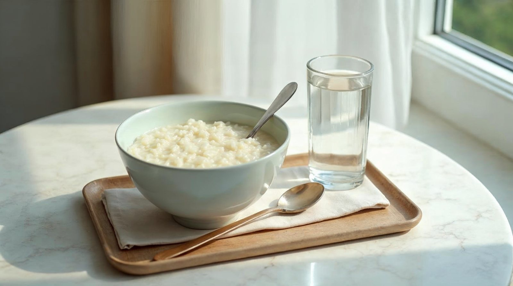
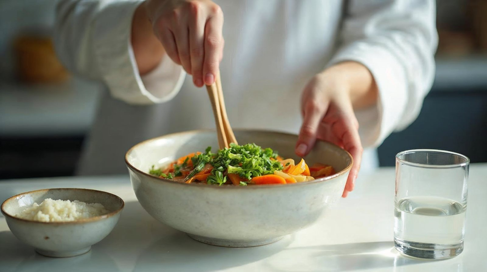
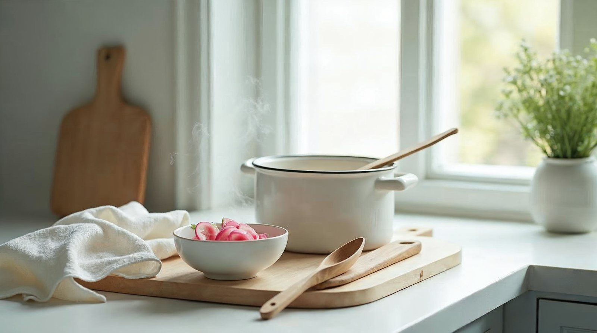
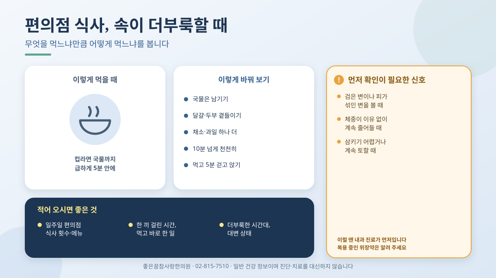

이종호 한의사 감수좋은꿈참사랑한의원 대표원장 (한의사 면허번호 19769)발행 2026-11-24 · 수정 2026-11-26
이 글의 차례
- 왜 이런 불편이 생길 수 있나요
- 더부룩함은 어떤 모습으로 나타나나요?
- 먼저 이렇게 여쭙니다
- 왜 급하게 먹으면 더 더부룩할까요?
- 상황별 예시
- 스스로 점검해 보세요
- 일상에서 먼저 해 볼 수 있는 것
- 편의점에서 이렇게 골라 보세요
- 먹는 시간과 순서도 바꿔 볼 수 있나요?
- 시험 긴장과 소화는 어떻게 이어져 있나요?
- 먹고 나서 5분, 이렇게 움직여 보세요
- 배를 따뜻하게 하는 것도 도움이 되나요?
- 한의원에서 함께 살필 수 있는 경우
- 커피와 에너지 음료는 어떻게 할까요?
- 위장약을 먹고 있다면 어떻게 하나요?
- 얼마나 지켜보고 언제 상담할까요
- 일주일 식사 기록은 어떻게 하면 좋을까요?
- 다시 오시면 무엇을 이어서 보나요?
- 이렇게 기록해 오시면 상담이 쉬워집니다
- 이런 증상은 먼저 확인이 필요합니다
편의점 음식을 끊기보다 국물을 남기고 단백질과 채소를 한 가지씩 더해 천천히 먹는 것만으로 더부룩함이 덜해지는 경우가 많습니다. 수업과 자습 사이 짧은 시간에 컵라면과 삼각김밥을 급하게 먹고 나면 오후 내내 속이 더부룩하다는 수험생이 많습니다.
가끔 생기는 더부룩함이라면 먹는 방식부터 바꿔 볼 수 있습니다. 일주일에 여러 번 반복되거나, 더부룩함 때문에 끼니를 거르고 공부에 집중하기 어려운 날이 늘어난다면 식사 습관과 소화 상태를 한 번 함께 살펴보시는 것이 좋습니다.
왜 이런 불편이 생길 수 있나요
- 급하게 먹으면 씹는 시간이 짧고 공기를 함께 삼키게 되어 식후 더부룩함이 생기기 쉽습니다.
- 라면 국물과 가공식품은 짜고 기름진 편이라 먹은 뒤 속이 무겁고 갈증이 나는 분이 있습니다.
- 먹자마자 오래 앉아 있으면 소화가 더 느리게 느껴지기도 합니다.
- 시험 긴장과 부족한 잠도 소화의 리듬에 영향을 줄 수 있어 한의학에서는 함께 살핍니다.
- 끼니를 거르다 한 번에 몰아 먹으면 위가 갑자기 많은 양을 받아 들여 더부룩함이 오래가기 쉽습니다.
- 탄산음료나 에너지 음료를 식사와 함께 마시면 배에 가스가 차는 느낌이 늘기도 합니다.
- 한의학에서는 긴장과 불규칙한 식사가 이어지면 비위의 기운이 약해져 음식이 오래 머무는 느낌, 즉 체한 듯한 답답함이 잦아진다고 봅니다.
더부룩함은 어떤 모습으로 나타나나요?
속이 더부룩하다는 말 안에도 여러 모습이 섞여 있습니다. 저는 불편이 언제 시작되고 어디가 어떻게 불편한지를 나눠 여쭙는데, 그에 따라 살필 방향과 생활에서 바꿀 점이 달라집니다.
- 먹고 나서 명치 아래가 꽉 찬 듯 무겁고 조금만 먹어도 배부르다면 위가 음식을 내려보내는 속도가 느려진 쪽을 먼저 생각합니다.
- 트림이 잦고 배가 빵빵하게 부풀며 가스가 많다면 급하게 먹으며 삼킨 공기나 탄산음료, 장의 움직임을 함께 봅니다.
- 명치가 쓰리고 신물이 올라오며 누우면 더하다면 위산이 올라오는 쪽을 함께 살핍니다.
- 아랫배가 더부룩하고 변을 며칠씩 못 본다면 변비가 함께 있는지 확인합니다.
- 식사 뒤 배가 아프고 설사를 자주 한다면 특정 음식이나 긴장과의 관계를 함께 봅니다.
한 사람에게 두세 가지가 겹치는 경우도 흔합니다. 예를 들어 급하게 먹어 트림이 잦고, 오래 앉아 있어 변비까지 있는 수험생이라면 먹는 속도와 움직임을 함께 바꾸는 쪽으로 순서를 정합니다.
더부룩함과 속쓰림을 나누는 법은 식사 뒤에 속이 더부룩한 것은 무엇 때문이고, 속쓰림과는 어떻게 다른가요?에 더 자세히 적었습니다.

먼저 이렇게 여쭙니다
- 일주일에 편의점 식사를 몇 번 정도 하나요?
- 주로 무엇을 고르나요?
- 한 끼를 먹는 데 얼마나 걸리나요?
- 먹고 나서 바로 앉아 공부를 시작하나요?
- 트림이나 가스, 속쓰림이 함께 있나요?
- 끼니를 거르고 한 번에 몰아 먹는 날이 있나요?
- 시험이나 모의고사가 가까울 때 더부룩함이 더 심해지나요?
- 대변은 며칠에 한 번 보고, 굳기는 어떤가요?
왜 급하게 먹으면 더 더부룩할까요?
음식을 충분히 씹으면 침과 섞여 잘게 부서진 채 위로 내려가, 위가 할 일이 그만큼 줄어듭니다. 그런데 쉬는 시간 안에 먹으려고 서둘러 삼키면 큰 덩어리가 그대로 내려가 위에 머무는 시간이 길어지고, 그 사이 공기까지 함께 삼켜 배가 빵빵해집니다.
또 배가 부르다는 신호는 먹기 시작하고 15~20분쯤 지나야 머리에 전해진다고 알려져 있습니다. 10분 안에 먹으면 배부름을 느끼기 전에 이미 많이 먹게 되어, 먹고 난 뒤 갑자기 속이 꽉 차는 느낌이 들기 쉽습니다.
상황별 예시
- 예를 들어 오전 수업과 오후 자습 사이 20분 안에 컵라면과 삼각김밥을 먹고 바로 자리에 앉는 수험생의 경우, 오후 내내 명치가 묵직하고 졸음이 쏟아질 수 있습니다. 같은 메뉴라도 국물을 남기고 먹은 뒤 5분 걷는 것부터 바꿔 볼 수 있습니다.
- 예를 들어 아침을 거르고 점심을 편의점 도시락으로 몰아 먹은 뒤 저녁은 과자와 음료로 때우는 경우, 하루 식사 간격이 들쭉날쭉해 위가 쉴 틈과 일할 때가 엉킵니다. 아침에 바나나나 우유처럼 가벼운 것 하나라도 먹어 간격을 맞추는 것부터 권합니다.
- 예를 들어 늦은 밤 공부를 마치고 컵라면을 먹은 뒤 바로 잠드는 경우, 다음 날 아침 속이 더부룩하고 입맛이 없을 수 있습니다. 이런 날이 잦다면 저는 마지막으로 먹은 시각과 잠든 시각부터 여쭙습니다.
스스로 점검해 보세요
- 일주일에 편의점 식사가 다섯 번을 넘는다
- 한 끼를 10분 안에 먹는 날이 많다
- 먹고 나서 바로 앉아 공부를 시작한다
- 식사와 함께 탄산음료나 에너지 음료를 마신다
- 끼니를 거르고 한 번에 몰아 먹는 날이 있다
- 잠들기 두세 시간 안에 야식을 먹는다
세 가지 이상 해당된다면 무엇을 먹는지보다 어떻게 먹는지부터 바꿔 보세요. 바꾼 뒤에도 더부룩함이 자주 반복된다면 진료 때 이 목록을 함께 보며 이야기를 나누면 좋습니다.

일상에서 먼저 해 볼 수 있는 것
- 컵라면 국물은 남기고 달걀이나 두부 같은 단백질 곁들이기
- 샐러드나 바나나처럼 채소·과일 하나 추가하기
- 10분 이상 천천히 씹어 먹기, 타이머를 맞춰 두고 15분쯤 걸려 먹는 연습 해 보기
- 식사는 자리에서 일어나 휴게 공간이나 바깥 벤치처럼 공부하는 책상이 아닌 곳에서 하기
- 먹은 뒤 5분 정도 걷고 자리에 앉기
- 먹는 동안 휴대폰이나 강의를 보지 않고 식사에만 집중하기
- 야식은 잠들기 두세 시간 전까지로 정하기
편의점에서 이렇게 골라 보세요
편의점 식사를 매번 피하기는 어렵습니다. 대신 고르는 순서를 정해 두면 같은 시간과 비용 안에서 속 부담을 덜 수 있습니다.
- 주식은 컵라면보다 주먹밥, 김밥, 도시락처럼 밥이 중심인 것을 먼저 고르기
- 곁들이는 단백질과 채소는 삶은 달걀, 두부, 우유, 컵 샐러드, 방울토마토처럼 뜯어서 바로 먹을 수 있는 것으로 고르기
- 음료는 탄산음료보다 물이나 무가당 차, 따뜻한 보리차로 고르기
- 튀김이나 매운 볶음 메뉴는 연달아 먹지 않고 하루 한 번 이하로 정하기
컵라면이 먹고 싶은 날은 작은 컵을 고르고 국물은 남기며, 김밥 한 줄을 곁들여 양을 나눠 보세요. 매운 라면을 빈속에 먹은 날 속쓰림이 심했다면 그날을 적어 두세요. 상담 때 흐름을 찾는 데 도움이 됩니다.
먹는 시간과 순서도 바꿔 볼 수 있나요?
무엇을 먹느냐만큼 언제, 어떤 순서로 먹느냐도 소화에 영향을 줍니다. 수업 시간표 때문에 식사 시간이 매일 달라진다면 몇 가지만 기준으로 정해 두세요.
- 끼니 시각을 날마다 비슷하게 맞추고, 다음 끼니까지 너무 길어질 것 같으면 중간에 가벼운 간식 먹기
- 먹을 때는 채소나 단백질을 먼저, 밥이나 면은 나중에 먹기
- 한 숟가락마다 수저를 내려놓고 열 번 넘게 씹기
- 식사 중에는 물을 한꺼번에 많이 마시지 않고 조금씩 마시기
- 먹은 뒤 바로 엎드려 자지 않기
예를 들어 수업이 길어져 점심이 늦어지는 날이라면, 쉬는 시간에 바나나나 우유를 먼저 먹어 두고 늦은 점심은 양을 줄이는 식으로 하루를 나눠 볼 수 있습니다.
아침을 거르고 공부를 시작하는 날이 많다면 아침을 거르고 공부를 시작하면 오전에 속이 쓰릴 때는 어떻게 하나요?도 함께 읽어 보세요.
시험 긴장과 소화는 어떻게 이어져 있나요?
시험이 가까워지면 같은 음식을 먹어도 속이 더 더부룩하다는 수험생이 많습니다. 긴장하면 몸은 소화보다 버티는 쪽에 힘을 쓰게 되어, 위가 음식을 내려보내는 움직임이 느려지고 배에 가스가 찬 느낌이 늘기 쉽습니다.
한의학에서는 걱정과 긴장이 오래 이어지면 간의 기운이 막혀 비위를 누르고, 그래서 명치가 답답하고 한숨이 잦으며 입맛이 떨어진다고 봅니다. 그래서 더부룩함으로 오신 분께 잠, 한숨, 가슴 답답함, 모의고사 일정도 함께 여쭙습니다.
이럴 때는 식사 전에 1~2분 숨을 천천히 내쉬고 어깨 힘을 뺀 뒤 먹기 시작하는 것부터 해 볼 수 있습니다. 문제를 풀다 급하게 먹기보다 식사 시간만큼은 공부를 내려놓는 것을 권합니다.
먹고 나서 5분, 이렇게 움직여 보세요
먹자마자 앉으면 배가 접힌 채로 오래 있게 되어 더부룩함이 길어지기 쉽습니다. 거창한 운동이 아니라 5분 정도 몸을 세우고 움직이는 것으로 충분합니다.
- 편의점에서 학원이나 독서실까지 조금 돌아서 걷기
- 건물 계단을 천천히 한두 층 오르내리기
- 걸을 수 없다면 서서 허리를 좌우로 천천히 돌리기
- 앉은 뒤에도 배를 압박하는 자세, 몸을 앞으로 깊게 숙이는 자세는 잠시 피하기
먹은 직후 격하게 뛰거나 무거운 운동을 하는 것은 오히려 속을 불편하게 할 수 있습니다. 천천히 걷는 정도가 좋습니다.
배를 따뜻하게 하는 것도 도움이 되나요?
겨울 독서실처럼 서늘한 곳에서 찬 음료와 차가운 도시락을 먹으면 배가 더 무겁다는 분이 많습니다. 한의학에서는 배가 차가우면 비위의 움직임이 느려진다고 보아, 배를 따뜻하게 지키는 것을 생활 관리의 하나로 권합니다.
저는 잘 먹고, 잘 싸고, 잘 자고, 마음 편하고, 몸 따뜻하게, 이 다섯 가지를 몸이 회복하는 바탕으로 봅니다. 편의점 한 끼에서도 그중 '잘 먹고'와 '몸 따뜻하게'는 바로 챙겨 볼 수 있습니다.
- 도시락은 데워 먹기
- 아랫배를 덮는 내복이나 얇은 담요로 배를 따뜻하게 하기
- 속이 더부룩할 때 손바닥을 비벼 따뜻하게 한 뒤 배꼽 주변을 시계 방향으로 천천히 쓸어 주기
배를 쓸어 줄 때는 아플 만큼 누르지 말고, 먹은 직후보다는 조금 지난 뒤에 해 보세요.

한의원에서 함께 살필 수 있는 경우
- 식후 더부룩함이 자주 있는 경우 식사 습관과 소화 상태를 함께 살핍니다.
- 속이 불편해 공부에 집중이 어려운 경우 긴장과 잠을 함께 살핍니다.
- 입맛이 없어 끼니를 거르는 경우 소화와 생활 리듬을 함께 살핍니다.
좋은꿈참사랑한의원에서는 모든 분께 맥부터 짚으며 불편이 생기는 시간대와 식사 습관을 여쭙고, 필요하다고 판단될 때 복진과 설진으로 배와 혀의 상태를 살핍니다. 하루 식사 시간과 자주 먹는 메뉴, 잠과 대변 상태, 시험 일정도 함께 듣습니다.
침이나 한약 상담 가운데 지금 상태에 맞는 방법을 정합니다. 한약 상담은 지금 드시는 위장약이나 다른 약을 확인한 뒤에 합니다. 귀가 전에는 일주일 동안 기록해 볼 점을 알려 드립니다.
커피와 에너지 음료는 어떻게 할까요?
편의점에서 식사와 함께 커피나 에너지 음료를 고르는 수험생이 많습니다. 빈속에 마시는 진한 커피는 속쓰림을 부르기 쉽고, 탄산이 든 에너지 음료는 배에 가스가 찬 느낌을 키우기도 합니다.
- 커피는 식사 뒤에 마시고, 빈속에는 피하기
- 커피는 오전에 마시고, 오후에는 물이나 보리차로 바꾸기
- 에너지 음료는 식사를 대신하는 용도로 쓰지 않기
- 졸음이 올 때는 음료보다 5분 걷기나 찬물 세수를 먼저 해 보기
카페인을 줄이면 처음 며칠은 머리가 무겁거나 졸릴 수 있습니다. 한 번에 끊기보다 하루 한 잔씩 줄여 가는 쪽이 부담이 덜합니다. 늦은 오후의 카페인은 잠을 얕게 해 다음 날 아침 입맛과 소화에도 영향을 줄 수 있습니다.
청소년은 어른보다 카페인 기준이 낮습니다. 마시는 양과 시각을 정하는 방법은 커피와 에너지 음료로 버티다 밤에 잠이 안 올 때는 어떻게 하나요?에 따로 적어 두었습니다.
위장약을 먹고 있다면 어떻게 하나요?
더부룩함이나 속쓰림 때문에 약국에서 산 위장약이나 병원에서 처방받은 약을 드시는 분도 많습니다. 처방받은 약은 처방한 의사와 상의 없이 줄이거나 끊지 마시고, 진료 때 약 이름과 먹는 횟수를 알려 주세요. 약 봉투나 상자를 사진으로 찍어 오시면 편합니다.
약을 먹어야 편한 날이 일주일에 몇 번인지, 약을 먹지 않은 날은 어떤지 함께 적어 오시면 지금 상태를 이해하는 데 도움이 됩니다.
얼마나 지켜보고 언제 상담할까요
- 먹는 속도와 메뉴 조합, 먹은 뒤 걷기를 바꾼 뒤 1~2주는 더부룩함이 어떻게 달라지는지 지켜보세요.
- 2~3주가 지나도 일주일에 여러 번 더부룩하거나, 입맛이 떨어져 끼니를 거르는 날이 늘었다면 내과 진료와 함께 상담해 보시길 권합니다.
- 속쓰림 때문에 밤에 깨거나 위장약을 자주 찾게 된다면 2~3주를 채우지 말고 내과 진료와 상담을 서둘러 주세요.
일주일 식사 기록은 어떻게 하면 좋을까요?
더부룩함은 그날 먹은 것뿐 아니라 며칠 동안의 식사 흐름과 잠, 긴장이 함께 얽혀 있어 기억만으로는 원인을 찾기 어렵습니다. 일주일만 간단히 적어 보면 어떤 날 더 불편했는지 흐름이 보입니다.
방법은 단순할수록 오래갑니다. 먹기 전에 음식 사진을 한 장 찍고, 더부룩함이 생기면 그 시각과 정도를 1~10점으로 휴대폰 메모장에 남기는 정도면 충분합니다. 무엇을 적을지는 아래 '이렇게 기록해 오시면' 목록을 참고해 주세요.
처음부터 완벽하게 적으려 하면 금방 지칩니다. 사진과 점수만이라도 꾸준히 남겨 오시면 진료 때 함께 보며 무엇부터 바꿀지 정하기 쉽습니다.
다시 오시면 무엇을 이어서 보나요?
다시 오시면 지난번에 정한 먹는 속도와 메뉴 조합, 먹은 뒤 걷기를 얼마나 지킬 수 있었는지부터 여쭙습니다. 기록을 함께 보며 더부룩함이 줄어든 날과 그대로였던 날을 비교하고, 그 차이가 어디서 왔는지 찾아봅니다.
맥은 다시 오실 때마다 짚고, 필요하다고 판단되면 배를 다시 눌러 보고 혀의 상태도 다시 봅니다. 시험 일정이나 공부 장소가 바뀌어 식사 시간이 달라졌다면 그에 맞춰 방법을 다시 정하고, 치료도 그 변화를 보며 조정합니다.
이렇게 기록해 오시면 상담이 쉬워집니다
- 일주일 편의점 식사 횟수와 자주 고르는 메뉴
- 한 끼 먹는 데 걸리는 시간과 먹은 뒤 바로 하는 일
- 더부룩함이 심한 시간대와 트림·가스·속쓰림 여부
- 대변 상태와 복용 중인 위장약
- 끼니를 거른 날, 잠든 시각과 시험·모의고사 일정
- 커피와 에너지 음료를 마신 시각과 양
편의점 한 끼로 버티는 날이 이어진다는 건 그만큼 하루가 빠듯하다는 뜻이겠지요. 한꺼번에 다 바꾸려 하지 마시고, 오늘 한 끼에서 하나만 골라 해 보세요. 다음에 오시면 저는 그 한 가지를 해 보니 어떠셨는지부터 여쭙겠습니다.
이런 증상은 먼저 확인이 필요합니다
- 검은 변이나 피가 섞인 변을 본 경우
- 체중이 이유 없이 계속 줄어드는 경우
이런 신호가 있으면 한의원보다 가까운 병원이나 응급실을 먼저 찾으세요.

여쭙는 것
- 일주일에 편의점 식사를 몇 번 정도 하나요?
- 주로 무엇을 고르나요?
- 한 끼를 먹는 데 얼마나 걸리나요?
생활에서 해 볼 것
- 컵라면 국물은 남기고 달걀이나 두부 같은 단백질 곁들이기
- 샐러드나 바나나처럼 채소·과일 하나 추가하기
- 10분 이상 천천히 씹어 먹기, 타이머를 맞춰 두고 15분쯤 걸려 먹는 연습 해 보기
한의원에서 함께 살필 것
- 식후 더부룩함이 자주 있는 경우 식사 습관과 소화 상태를 함께 살핍니다.
- 속이 불편해 공부에 집중이 어려운 경우 긴장과 잠을 함께 살핍니다.
- 입맛이 없어 끼니를 거르는 경우 소화와 생활 리듬을 함께 살핍니다.
먼저 확인이 필요한 신호
- 검은 변이나 피가 섞인 변을 본 경우
- 체중이 이유 없이 계속 줄어드는 경우
한눈에 보는 표
| 구분 | 핵심 |
|---|---|
| 여쭙는 것 | 일주일에 편의점 식사를 몇 번 정도 하나요? 주로 무엇을 고르나요? |
| 생활에서 해 볼 것 | 컵라면 국물은 남기고 달걀이나 두부 같은 단백질 곁들이기 샐러드나 바나나처럼 채소·과일 하나 추가하기 |
| 한의원에서 함께 살필 것 | 식후 더부룩함이 자주 있는 경우 식사 습관과 소화 상태를 함께 살핍니다. 속이 불편해 공부에 집중이 어려운 경우 긴장과 잠을 함께 살핍니다. |
| 먼저 확인이 필요한 신호 | 검은 변이나 피가 섞인 변을 본 경우 체중이 이유 없이 계속 줄어드는 경우 |
자주 묻는 질문
편의점 음식은 아예 피해야 하나요?
꼭 그렇지는 않습니다. 무엇을 함께 고르고 어떻게 먹는지에 따라 부담을 줄일 수 있습니다.
탄산음료를 마시면 속이 내려가는 것 같은데요?
잠깐 시원할 수 있지만 오히려 더부룩함이 늘 수 있어, 따뜻한 물을 조금씩 마셔 보세요.
진료 시간은 어떻게 되나요?
좋은꿈참사랑한의원은 평일 09:30~20:00(점심 13:00~14:00), 토·일·공휴일 09:30~15:00에 진료합니다.
좋은꿈참사랑한의원은 재진 때 지난번 이야기부터 이어서 여쭙니다. 진료시간과 예약은 오시는 길에서 확인하세요.
어디서 상담받을 수 있나요?
좋은꿈참사랑한의원은 서울 동작구 만양로2길 2 신성빌딩 3층·5층(서울 동작구 상도동, 7호선 상도역 3번 출구 근처)에 있습니다. 한의사 3명(이종호 대표원장, 조영기 수석진료원장, 정원영 진료원장)이 진료합니다. 진료시간은 평일 09:30~20:00(점심 13:00~14:00), 토·일·공휴일 09:30~15:00이며, 방문 전 전화로 확인을 권합니다. 예약은 네이버 예약, 카카오톡 상담, 전화 02-815-7510로 받습니다.
이 글은 일반적인 건강 정보이며 개인의 진단이나 치료를 대신하지 않습니다. 증상이 있거나 복용 중인 약이 있다면 진료를 통해 확인하세요. 치료 효과는 개인마다 다를 수 있습니다.
작성 기준: 일반적으로 알려져 있는 건강 정보를 참고해 정리했습니다(대표원장 감수). 증상 기록은 1~2주 동안 하루 1회, 비슷한 시간에 적어 오시면 지난 상태와 비교하기 쉽습니다.